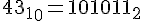
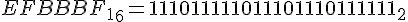
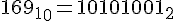

Причиной разобраться в том, как же работает UTF-8 и что такое Юникод заставил тот факт, что VBScript не имеет встроенных функций работы с UTF-8. А так как ничего рабочего не нашел, то пришлось писать/дописывать самому. Опыт на мой взгляд полезный в любом случае. Для лучшего понимания начну с теории.
О Юникоде
До появления Юникода широко использовались 8-битные кодировки, главные минусы которых очевидны:
- Всего 255 символов, да и то часть из них не графические;
- Возможность открыть документ не с той кодировкой, в которой он был создан;
- Шрифты необходимо создавать для каждой кодировки.
Так и было решено создать единый стандарт «широкой» кодировки, которая включала бы все символы (при чем сначала хотели в нее включить только обычные символы, но потом передумали и начали добавлять и экзотические). Юникод использует 1 112 064 кодовых позиций (больше чем 16 бит). Начало дублирует ASCII, а дальше остаток латиницы, кирилица, другие европейские и азиатские символы. Для обозначений символов используют шестнадцатеричную запись вида «U+xxxx» для первых 65k и с большим количеством цифр для остальных.
О UTF-8
Когда-то я думал что есть Юникод, а есть UTF-8. Позже я узнал, что ошибался.
UTF-8 является лишь представлением Юникода в 8-битном виде. Символы с кодами меньше 128 представляются одним байтом, а так как в Юникоде они повторяют ASCII, то текст написанный только этими символами будет являться текстом в ASCII. Символы же с кодами от 128 кодируются 2-мя байтами, с кодами от 2048 — 3-мя, от 65536 — 4-мя. Так можно было бы и до 6-ти байт дойти, но кодировать ими уже ничего.
0x00000000 — 0x0000007F: 0xxxxxxx
0x00000080 — 0x000007FF: 110xxxxx 10xxxxxx
0x00000800 — 0x0000FFFF: 1110xxxx 10xxxxxx 10xxxxxx
0x00010000 — 0x001FFFFF: 11110xxx 10xxxxxx 10xxxxxx 10xxxxxx
Кодируем в UTF-8
Порядок действий примерно такой:
- Каждый символ превращаем в Юникод.
- Проверяем из какого символ диапазона.
- Если код символа меньше 128, то к результату добавляем его в неизменном виде.
- Если код символа меньше 2048, то берем последние 6 бит и первые 5 бит кода символа. К первым 5 битам добавляем 0xC0 и получаем первый байт последовательности, а к последним 6 битам добавляем 0x80 и получаем второй байт. Конкатенируем и добавляем к результату.
- Похожим образом можем продолжить и для больших кодов, но если символ за пределами U+FFFF придется иметь дело с UTF-16 суррогатами.
Код (vb.net):
Function EncodeUTF8(s)
Dim i, c, utfc, b1, b2, b3
For i=1 to Len(s)
c = ToLong(AscW(Mid(s,i,1)))
If c < 128 Then
utfc = chr( c)
ElseIf c < 2048 Then
b1 = c Mod &h40
b2 = (c - b1) / &h40
utfc = chr(&hC0 + b2) & chr(&h80 + b1)
ElseIf c < 65536 And (c < 55296 Or c > 57343) Then
b1 = c Mod &h40
b2 = ((c - b1) / &h40) Mod &h40
b3 = (c - b1 - (&h40 * b2)) / &h1000
utfc = chr(&hE0 + b3) & chr(&h80 + b2) & chr(&h80 + b1)
Else
' Младший или старший суррогат UTF-16
utfc = Chr(&hEF) & Chr(&hBF) & Chr(&hBD)
End If
EncodeUTF8 = EncodeUTF8 + utfc
Next
End Function
Function ToLong(intVal)
If intVal < 0 Then
ToLong = CLng(intVal) + &H10000
Else
ToLong = CLng(intVal)
End If
End Function
Декодируем UTF-8
- Ищем первый символ вида 11xxxxxx
- Считаем все последующие байты вида 10xxxxxx
- Если последовательность из двух байт и первый байт вида 110xxxxx, то отсекаем приставки и складываем, умножив первый байт на 0x40.
- Аналогично для более длинных последовательностей.
- Заменяем всю последовательность на нужный символ Юникода.
Код (vb.net):
Function DecodeUTF8(s)
Dim i, c, n, b1, b2, b3
i = 1
Do While i <= len(s)
c = asc(mid(s,i,1))
If (c and &hC0) = &hC0 Then
n = 1
Do While i + n <= len(s)
If (asc(mid(s,i+n,1)) and &hC0) <> &h80 Then
Exit Do
End If
n = n + 1
Loop
If n = 2 and ((c and &hE0) = &hC0) Then
b1 = asc(mid(s,i+1,1)) and &h3F
b2 = c and &h1F
c = b1 + b2 * &h40
Elseif n = 3 and ((c and &hF0) = &hE0) Then
b1 = asc(mid(s,i+2,1)) and &h3F
b2 = asc(mid(s,i+1,1)) and &h3F
b3 = c and &h0F
c = b3 * &H1000 + b2 * &H40 + b1
Else
' Символ больше U+FFFF или неправильная последовательность
c = &hFFFD
End if
s = left(s,i-1) + chrw( c) + mid(s,i+n)
Elseif (c and &hC0) = &h80 then
' Неожидаемый продолжающий байт
s = left(s,i-1) + chrw(&hFFFD) + mid(s,i+1)
End If
i = i + 1
Loop
DecodeUTF8 = s
End Function
По теме:
Юникод на Википедии
Источник
Если честно я тоже первый раз знакомлюсь с этой темой 
Попробую объяснить.
Koza Nozdri, первые два числа это просто диапазон (в 16-ричной системе счисления).
В 10-чной смотри ниже мою таблицу.
Кол-во лидирующих единичек (до цифры 0) показывает кол-во битов, которыми кодируется символ (исключение: 1 байт, где первым идет сразу 0):
0......... - 1 байт
110...... - 2 байта
1110.... - 3 байта и т.д. :
Чтобы узнать, сколько писать таких единичек,
нужно узнать ASCII-код кодируемого символа, и посмотреть колонку № 1 таблицы:
Отфильтровать:
|
Ищем диапазон, которому принадлежит ASCII-код кодируемого символа |
Сколько байт будет занимать 1 символ в кодированном виде |
Битовая запись кодированного символа |
Кол-во значащих битов |
Описание |
|
0 — 127 |
1 байт |
0aaa aaaa |
7 |
ASCII, в том числе латинский алфавит, простейшие знаки препинания и арабские цифры |
|
128 — 2047 |
2 байта |
110x xxxx 10xx xxxx |
11 |
кириллица, расширенная латиница, арабский, армянский, греческий, еврейский и коптский алфавит; сирийское письмо, тана, нко; МФА; некоторые знаки препинания |
|
2048 — 65535 |
3 байта |
1110 xxxx 10xx xxxx 10xx xxxx |
16 |
кириллица, расширенная латиница, арабский, армянский, греческий, еврейский и коптский алфавит; сирийское письмо, тана, нко; МФА; некоторые знаки препинания |
|
65536 — 2097151 |
4 байта |
1111 0xxx 10xx xxxx 10xx xxxx 10xx xxxx |
21 |
музыкальные символы, редкие китайские иероглифы, вымершие формы письменности |
|
Не используется |
5 байт |
1111 10xx 10xx xxxx 10xx xxxx 10xx xxxx 10xx xxxx |
26 |
|
|
Не используется |
6 байт |
1111 110x 10xx xxxx 10xx xxxx 10xx xxxx 10xx xxxx 10xx xxxx |
31 |
|
Showing 1 to 6 of 6 entries
где x - это значащие биты.
Например, ты берешь символ +. Вспоминаем таблицу ASCII-кодов.
Его код =

Мы ведь уже научились переводить 10 (Dec) -> 2 (Bin) с помощью калькулятора Windows (вид "Программист") ?
Все это - значащие биты (2-чное представление ASCII-кода кодируемого символа).
Ищем диапазон по таблице. Нашли: 0 <= 43 <= 127.
Значит в кодированном виде будет занимать 1 байт. Смотрим правило (выше по таблице).
Первый бит будет = 0. Остальные просто переносим (не забывая дописать лидирующий значащий 0, чтобы получить полный байт (все 8 бит):
00101011
+ дописываем BOM (идентификатор, того что дальше идет кодировка UTF-8)

Итого:
1110 1111 1011 1011 1011 1111 0010 1011 - это и будет символ + в кодировке UTF-8.
Кстати, сам BOM - это тоже закодированное в UTF-8 значение FF FE (по сути 2-байтовый символ с ASCII-кодом 65534, который в закодированном виде занимает 3 байта).
______________________
Теперь давай закодируем символ авторских прав ©.
ASCII код =

Входит в диапазон по таблице. Нашли: 128 <= 169 <= 2047. А значит кодируется уже в 2 байта.
Кодированный шаблон такой:
110x xxxx 10xx xxxx
Подставляем в шаблон вместо иксов 2-чное представление ASCII-кода символа (справа налево):
1100 0010 1010 1001
не забываем дописать три нуля, чтобы завершить байт.
Дописываем BOM и получаем:
1110 1111 1011 1011 1011 1111 1100 0010 1010 1001
Можно проверить результат в редакторе Notepad++ или AkelPad,
создав символ сначала в кодировке Windows-1251, а затем сохранив как UTF-8 с BOM.
Затем открыть любым HEX-редактором в 2-чном представлении.